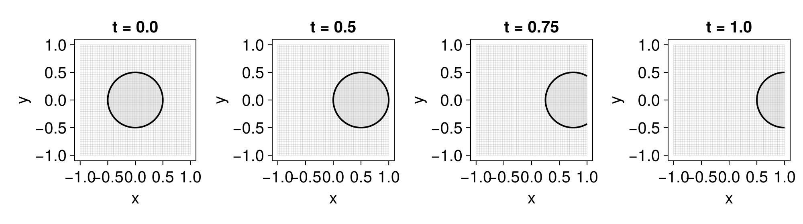
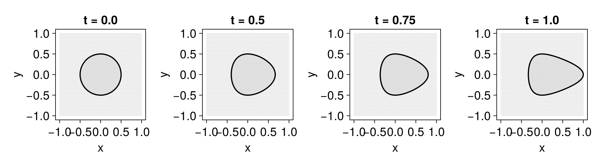
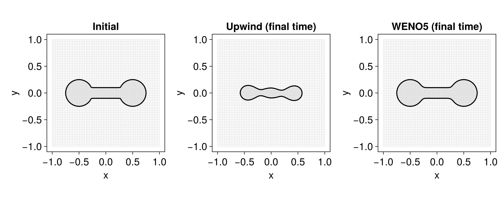
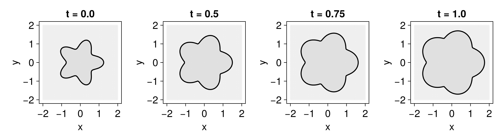
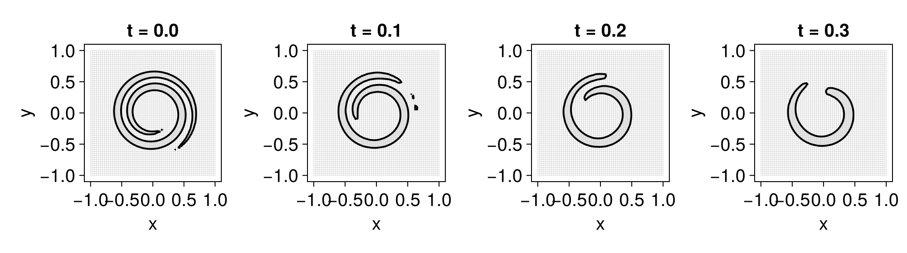
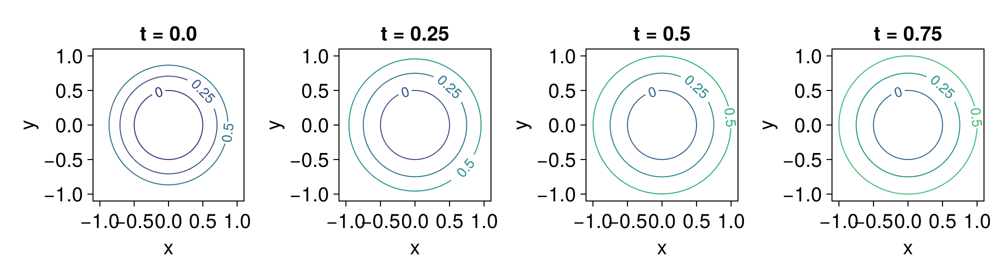

Level-set terms
A level-set equation is given by
\[ \phi_t + \sum_n \texttt{term}_n = 0\]
where each $\texttt{term}_n$ is a LevelSetTerm object. The following terms are available:
using LevelSetMethods
subtypes(LevelSetMethods.LevelSetTerm)4-element Vector{Any}:
AdvectionTerm
CurvatureTerm
EikonalReinitializationTerm
NormalMotionTermWe look at each in turn. Every example below evolves an equation and tiles a few snapshots side by side, so we factor that loop into a small helper:
using LevelSetMethods, StaticArrays, GLMakie
LevelSetMethods.set_makie_theme!()
# advance `eq` through `times` (increasing) and tile the states side by side
function snapshots(eq, times; size = (1000, 280))
fig = Figure(; size)
for (n, t) in enumerate(times)
integrate!(eq, t)
ax = Axis(fig[1, n]; title = "t = $t")
plot!(ax, eq)
end
return fig
endAdvection
The simplest term is the advection term,
\[ \mathbf{u} \cdot \nabla \phi\]
where $\mathbf{u}$ is a velocity field. It models transport of the level-set by an external velocity field (see [1, Chapter 3]). Passing a MeshField to the AdvectionTerm constructor gives a velocity sampled at the grid points — useful when the field is time-independent or only known at nodes:
grid = CartesianGrid((-1, -1), (1, 1), (64, 64))
𝐮 = MeshField(x -> SVector(1, 0), grid)
ϕ₀ = MeshField(x -> sqrt(x[1]^2 + x[2]^2) - 0.5, grid)
eq = LevelSetEquation(; terms = (AdvectionTerm(𝐮),), ic = ϕ₀, bc = NeumannBC())
snapshots(eq, [0.0, 0.5, 0.75, 1.0])
The level-set is advected to the right. For a time-dependent field, pass a function (x, t) instead — it receives the spatial coordinates x (an abstract vector of length d) and the time t, and must return a vector of length d:
eq = LevelSetEquation(; terms = AdvectionTerm((x, t) -> SVector(x[1]^2, 0)), ic = ϕ₀, bc = NeumannBC())
snapshots(eq, [0.0, 0.5, 0.75, 1.0])
The constructor also accepts a scheme as a second argument:
Upwind(): first-order upwind schemeWENO5(): fifth-order WENO scheme (default)
The WENO scheme is more expensive but much more accurate, and is usually preferable to the upwind scheme, which introduces significant numerical diffusion. Comparing the two on a purely rotational velocity field acting on a dumbbell (assembled with the CSG operators from the geometry page) makes the difference plain:
disk(c) = MeshField(x -> hypot((x .- c)...) - 0.25, grid)
bar = MeshField(x -> maximum(abs.(x) .- (1.0, 0.2) ./ 2), grid)
ϕ₀ = disk((-0.5, 0.0)) ∪ disk((0.5, 0.0)) ∪ bar # a dumbbell
𝐮 = MeshField(grid) do (x, y)
SVector(-y, x)
end
eq_upwind = LevelSetEquation(; terms = AdvectionTerm(𝐮, Upwind()), ic = ϕ₀, bc = NeumannBC())
eq_weno = LevelSetEquation(; terms = AdvectionTerm(𝐮), ic = ϕ₀, bc = NeumannBC())
fig = Figure(size = (1000, 400))
plot!(Axis(fig[1, 1]; title = "Initial"), eq_upwind)
integrate!(eq_upwind, π) # half a revolution
integrate!(eq_weno, π)
plot!(Axis(fig[1, 2]; title = "Upwind (final time)"), eq_upwind)
plot!(Axis(fig[1, 3]; title = "WENO5 (final time)"), eq_weno)
fig
Normal motion
The normal motion term is
\[ v |\nabla \phi|\]
where $v$ is a scalar field. It moves the level-set in the normal direction (see [1, Chapter 6]). Here it is on a star-shaped interface (see the geometry page):
grid = CartesianGrid((-2, -2), (2, 2), (64, 64))
ϕ = MeshField(grid) do x # a star
r, θ = hypot(x...), atan(x[2], x[1])
return r - (1 + 0.25 * cos(5θ))
end
eq = LevelSetEquation(; terms = (NormalMotionTerm((x, t) -> 0.5),), ic = ϕ, bc = NeumannBC())
snapshots(eq, [0.0, 0.5, 0.75, 1.0])
As with AdvectionTerm, you can provide an update callback to mutate a mesh-based speed field before each stage of time integration:
vfield = MeshField(x -> 0.0, grid)
NormalMotionTerm(vfield, (v, ϕ, t) -> (values(v) .= 0.25 + 0.1 * t))v|∇ϕ|In Stefan problems, the speed v may only be known near the interface ϕ = 0. You can extend that interface speed to a band around the interface with extend_along_normals! (see velocity extension), then pass the result to NormalMotionTerm:
v = zeros(Float64, size(grid)...)
Δ = minimum(LevelSetMethods.meshsize(grid))
frozen = abs.(values(ϕ)) .<= 1.5Δ
for I in CartesianIndices(v)
frozen[I] || continue
x = getnode(grid, I)
v[I] = 0.2 + 0.1 * cos(2π * atan(x[2], x[1]))
end
extend_along_normals!(v, ϕ; frozen, nb_iters = 80)
NormalMotionTerm(MeshField(v, grid))v|∇ϕ|Curvature motion
This term moves the level-set in the normal direction with a velocity proportional to the mean curvature,
\[ b \kappa |\nabla \phi|\]
where $\kappa = \nabla \cdot (\nabla \phi / |\nabla \phi|)$. The coefficient $b$ should be negative; a positive value yields an ill-posed evolution (akin to a negative diffusion coefficient). Here is the classic motion by mean curvature on a spiral-like level-set:
grid = CartesianGrid((-1, -1), (1, 1), (64, 64))
# a spiral level-set
d, r0, θ0, α = 1, 0.5, -π / 3, π / 100.0
R = [cos(α) -sin(α); sin(α) cos(α)]
M = R * [1/0.06^2 0; 0 1/(4π^2)] * R'
ϕ = MeshField(grid) do (x, y)
r, θ = sqrt(x^2 + y^2), atan(y, x)
result = 1e30
for i in 0:4
v = [r - r0; (θ + (2i - 4) * π) - θ0]
result = min(result, sqrt(v' * M * v) - d)
end
return result
end
eq = LevelSetEquation(; terms = (CurvatureTerm((x, t) -> -0.1),), ic = ϕ, bc = NeumannBC())
snapshots(eq, [0.0, 0.1, 0.2, 0.3])
Reinitialization term
The reinitialization term evolves
\[ \phi_t + \text{sign}(\phi) \left( |\nabla \phi| - 1 \right) = 0\]
to keep the level-set function close to a signed distance function — sometimes important for numerical stability. The evolution penalizes deviation from $|\nabla \phi| = 1$ without moving the zero contour; in practice a smeared sign is used (see [1, Chapter 7]). Starting from a circle level-set that is not a signed distance, the term drives it toward the true SDF:
grid = CartesianGrid((-1, -1), (1, 1), (64, 64))
ϕ = MeshField(x -> x[1]^2 + x[2]^2 - 0.5^2, grid) # circle, but not a signed distance
eq = LevelSetEquation(; terms = (EikonalReinitializationTerm(),), ic = ϕ, bc = NeumannBC())
fig = Figure(; size = (1000, 280))
for (n, t) in enumerate([0.0, 0.25, 0.5, 0.75])
integrate!(eq, t)
ax = Axis(fig[1, n]; title = "t = $t")
contour!(ax, current_state(eq); levels = [0.25, 0, 0.5], labels = true, labelsize = 14)
end
fig
As the equation evolves, the evenly spaced contours of ϕ relax toward those of the signed distance function $\sqrt{x^2 + y^2} - 0.5$.
Alternatively, applying the sign to the initial level-set only,
\[ \phi_t + \text{sign}(\phi_0) \left( |\nabla \phi| - 1 \right) = 0,\]
is enabled by passing a MeshField to the constructor — EikonalReinitializationTerm(ϕ) — and yields a closely matching result.
EikonalReinitializationTerm requires many pseudo-time steps to propagate corrections away from the interface and can cause spurious mass loss. For most use cases, reinitialize! (Newton closest-point) is a better choice: it samples the interface, builds a KD-tree, and computes the signed distance to high order in a single pass. See the Signed distance functions page for details.